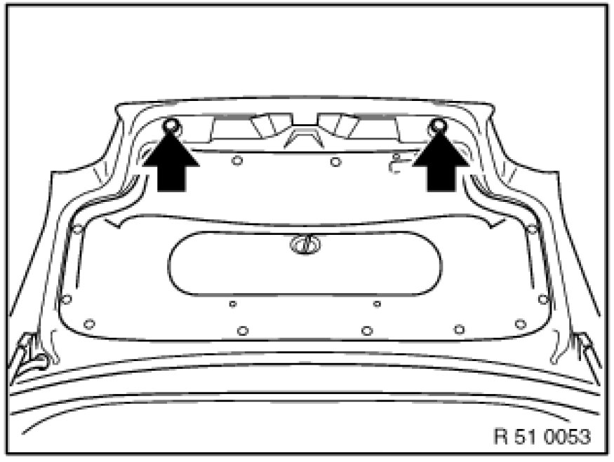
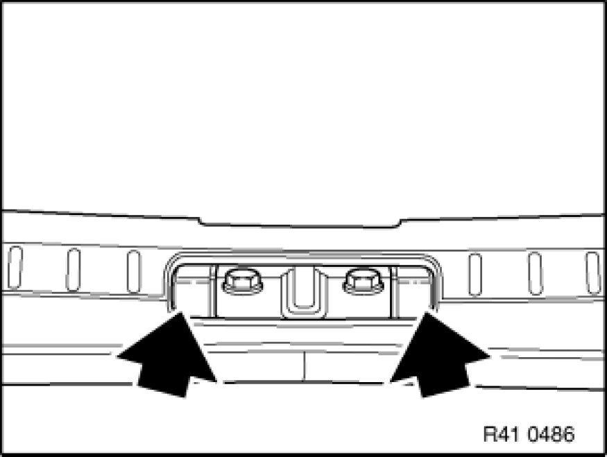
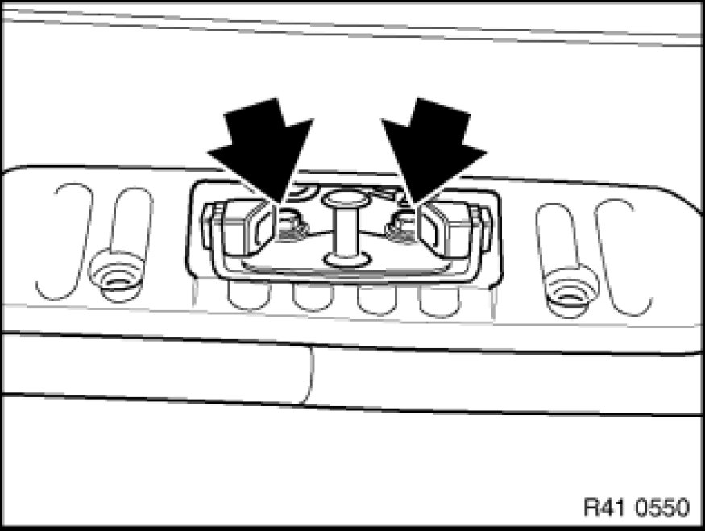

Trunk / Liftgate Latch: Adjustments
51 24 004 - Adjusting rear lid lock (lower section of rear lid lock)

Note:
Rear lid must be correctly adjusted to fit before adjustment of rear lid lock.
If necessary - Adjust rear lid Adjustments.
For ideal adjustment, refer to Body gap dimensions .

Screw in detent buffers for rear lid on left/right completely.

Check fulcrum pads on lower section of rear lid lock for damage and replace if necessary.

Version with cover caps on rear apron trim:
If necessary, remove cover caps.
Slacken screws in lower section of rear lid lock until it is just able to move and centres itself.
The lower section of the rear lid lock must not scrape against the rear lid lock.
Note:
Adjusting lower section of rear lid lock:
Close rear lid.
This enables the lower section of the rear lid lock to adjust itself correctly.
Open rear lid.
Tighten down screws on lower section of rear lid lock.
Tightening torque 51 24 6AZ (E60, E63, E64).
Tightening torque 51 24 2AZ [1][2][3]51 24 Rear Lid Locks (E82, E88, E90, E92).
Check adjustment of rear lid and rear lid lock, repeating adjustment if necessary.
Unscrew detent buffer until closed rear lid abuts against left/right detent buffers.
Important!
The rear lid must not be higher than the side panels, otherwise there is preload on height adjustment!